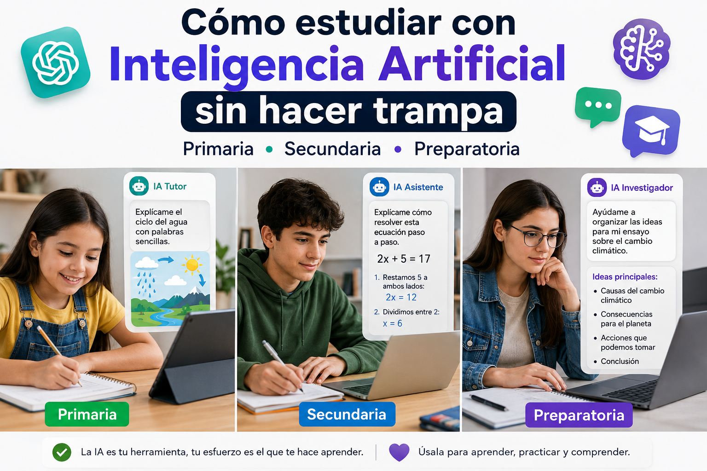

Cómo estudiar con Inteligencia Artificial sin hacer trampa
Publicado el 28 de agosto de 2026 · Lectura de 8 minutos

Publicado por Cómo Hablar con la IA
Introducción
La Inteligencia Artificial está cambiando la forma en que muchas personas aprenden y buscan información. Actualmente, niños, adolescentes y jóvenes pueden utilizar herramientas de IA para resolver dudas, practicar temas y comprender conceptos que pueden resultar difíciles.
Sin embargo, también existe una preocupación importante: ¿estudiar con Inteligencia Artificial significa hacer trampa?
La respuesta depende de cómo se utilice. Pedirle a una IA que haga toda una tarea, responda un examen o escriba un trabajo para entregarlo como propio no ayuda realmente a aprender.
En cambio, utilizar la Inteligencia Artificial como un profesor, tutor o asistente puede ser una forma muy útil de estudiar. Puedes pedirle que explique un tema con palabras sencillas, que te haga preguntas, que cree ejercicios o que te ayude a encontrar los errores que cometiste.
Además, la forma de utilizar la IA puede cambiar dependiendo de la edad y el nivel escolar. Un niño de primaria necesitará explicaciones mucho más sencillas que un estudiante de preparatoria que está preparando un examen o realizando una investigación.
En este artículo descubrirás 22 formas prácticas de utilizar la Inteligencia Artificial para estudiar sin hacer trampa, con ejemplos para estudiantes de primaria, secundaria y preparatoria.
La idea no es dejar que la IA haga el trabajo por ti, sino aprender a utilizarla como una herramienta que te ayude a comprender mejor, practicar y desarrollar tus propias habilidades.
🧒 1. Utilizar la IA como un profesor particular
Para los estudiantes de primaria, la Inteligencia Artificial puede ser una herramienta muy útil para comprender temas que todavía pueden resultar difíciles. La clave está en pedirle explicaciones sencillas, utilizando palabras que el niño pueda entender.
Por ejemplo, en lugar de pedirle a la IA que haga una tarea completa, el estudiante puede pedirle que explique un tema paso a paso y después hacer preguntas para comprobar si realmente lo comprendió.
📚 Algunas formas de utilizarla
- 📚 Pedirle a la IA que explique un tema con palabras sencillas.
- 🧮 Practicar matemáticas sin recibir directamente la respuesta.
- 📖 Crear preguntas sobre una lectura.
- 🌎 Aprender historia y ciencias mediante ejemplos sencillos.
- 🧠 Crear juegos y pequeños retos para estudiar.
- ✍️ Mejorar una redacción sin permitir que la IA haga todo el trabajo.
❌ Esto sería hacer trampa
Hazme mi tarea sobre los planetas.
En este caso, la IA estaría haciendo prácticamente todo el trabajo que debería realizar el estudiante.
✅ Esto ayuda a aprender
Explícame los planetas como si tuviera 9 años. Utiliza palabras sencillas y ejemplos fáciles de entender. Después hazme 5 preguntas para comprobar si realmente entendí la explicación. No me des las respuestas de las preguntas hasta que yo las haya contestado.
De esta manera, el estudiante no solamente recibe información: también tiene que leer, pensar, responder y comprobar cuánto aprendió.
💡 Consejo para primaria
En esta etapa es recomendable que los niños utilicen la IA con la orientación de un padre, madre, maestro u otro adulto responsable. La herramienta debe utilizarse como apoyo para aprender y no como sustituto de la escuela, los libros o el esfuerzo del estudiante.
🧮 2. Practicar matemáticas sin recibir la respuesta
Las matemáticas son otro ejemplo donde la Inteligencia Artificial puede convertirse en un tutor de práctica. En lugar de pedirle que resuelva directamente un ejercicio, el estudiante puede pedirle que explique el procedimiento y después intentar resolver uno por sí mismo.
❌ En lugar de esto
Resuelve esta división y dame solamente la respuesta.
✅ Podemos preguntarle esto
Explícame cómo hacer divisiones paso a paso. Después dame 3 ejercicios para practicar. No me des las respuestas todavía. Quiero intentar resolverlos yo primero. Cuando te dé mis respuestas, dime cuáles están correctas y explícame mis errores de forma sencilla.
Así, la IA funciona más como un profesor de práctica que como una máquina que simplemente entrega respuestas.
📖 3. Crear preguntas sobre una lectura
Si un estudiante tiene que leer un cuento, una historia o un texto escolar, puede utilizar la IA para comprobar cuánto comprendió.
Leí este texto y quiero comprobar si lo entendí. Hazme 5 preguntas sobre la lectura. Empieza con preguntas sencillas y después aumenta un poco la dificultad. No me des las respuestas. Cuando responda, dime qué hice bien y explícame cualquier error.
Este método puede ayudar a convertir una lectura en una pequeña actividad de comprensión.
🌎 4. Aprender historia y ciencias
Algunos temas de historia y ciencias pueden resultar difíciles cuando se explican solamente mediante definiciones. Una IA puede ayudar a convertir esos conceptos en ejemplos, historias o explicaciones adaptadas a la edad del estudiante.
Explícame qué es el sistema solar como si tuviera 9 años. Utiliza ejemplos sencillos y compara los planetas con cosas que pueda conocer. Al final hazme 5 preguntas para comprobar lo que aprendí.
🧠 5. Convertir el estudio en un juego
Estudiar no siempre tiene que consistir en leer y memorizar. La IA también puede ayudarte a crear pequeños juegos, acertijos y retos relacionados con una materia.
Crea un juego de preguntas sobre animales para un niño de primaria. Hazme una pregunta a la vez. Dame 3 opciones para responder. No me digas la respuesta antes de que elija. Cuando responda, dime si acerté y explícame brevemente por qué.
✍️ 6. Mejorar una redacción sin que la IA la haga
La IA también puede ayudar a mejorar la escritura, pero existe una diferencia importante entre corregir un trabajo y escribirlo completamente.
El estudiante puede escribir primero sus propias ideas y después pedir ayuda para identificar errores de ortografía, puntuación o claridad.
Este es un texto que escribí yo. No lo reescribas completamente. Señala mis errores de ortografía, puntuación y las partes que podrían explicarse mejor. Después explícame cómo puedo corregirlos para que yo pueda mejorar mi texto.
De esta manera, el estudiante sigue siendo el autor del trabajo y utiliza la IA como una herramienta para aprender a escribir mejor.
👦 7. Usar la IA para estudiar en secundaria
En secundaria, las materias comienzan a ser más complejas y los estudiantes tienen que desarrollar una mayor capacidad para investigar, resolver problemas y estudiar por su cuenta.
La Inteligencia Artificial puede convertirse en un asistente de estudio que explique conceptos, proponga ejercicios, revise respuestas y ayude a identificar los temas que todavía necesitan más práctica.
📚 Algunas formas de utilizarla
- 📐 Resolver problemas de matemáticas paso a paso.
- 🧪 Comprender conceptos de ciencias mediante ejemplos.
- 📖 Analizar textos y comprender sus ideas principales.
- 🌎 Estudiar acontecimientos y conceptos de historia.
- 🇺🇸 Practicar inglés mediante conversaciones y ejercicios.
- 📝 Prepararse para exámenes con preguntas de práctica.
- 📋 Crear resúmenes de temas estudiados.
- 🧠 Detectar qué temas todavía necesita reforzar.
📐 Ejemplo: estudiar matemáticas
Supongamos que un estudiante tiene un examen de ecuaciones de primer grado. En lugar de pedirle a la IA que resuelva todos sus ejercicios, puede utilizarla para aprender el procedimiento y después practicar por su cuenta.
Tengo examen de matemáticas sobre ecuaciones de primer grado. Explícame el procedimiento paso a paso con palabras sencillas. Después dame un ejemplo resuelto y finalmente dame un ejercicio para que yo lo resuelva. No me des la respuesta hasta que te diga mi resultado. Cuando te dé mi respuesta, revisa mi procedimiento y explícame cualquier error que haya cometido.
De esta manera, el estudiante tiene que comprender el procedimiento, intentar resolver el problema y aprender de sus errores.
🧪 8. Comprender ciencias con ejemplos
Algunas materias de ciencias pueden contener conceptos difíciles de imaginar solamente leyendo una definición. La IA puede ayudar a explicarlos utilizando ejemplos sencillos y comparaciones.
Por ejemplo, un estudiante puede pedir ayuda para comprender conceptos de biología, física o química.
Estoy estudiando para secundaria y necesito entender qué es la fotosíntesis. Explícamela paso a paso utilizando palabras sencillas. Utiliza un ejemplo de la vida cotidiana para ayudarme a entenderla. Después hazme 5 preguntas para comprobar si realmente comprendí el tema. No me des las respuestas hasta que yo haya intentado contestarlas.
Este tipo de preguntas permite que el estudiante no solamente memorice una definición, sino que intente comprender cómo funciona el concepto.
📖 9. Analizar textos y crear resúmenes
En secundaria también es común encontrar textos largos que contienen mucha información. Una IA puede ayudar a identificar las ideas principales y convertirlas en una estructura más sencilla para estudiar.
📋 Ejemplo de prompt
Voy a estudiar el siguiente texto. Ayúdame a identificar: 1. La idea principal. 2. Las ideas secundarias. 3. Las palabras importantes. 4. Los conceptos que debería recordar. Después crea un resumen utilizando solamente la información del texto. No agregues información externa.
Después de leer el resumen, el estudiante puede intentar explicar el tema con sus propias palabras. Si no puede hacerlo, probablemente necesita volver a estudiar esa parte.
🌎 10. Estudiar historia de una forma más interactiva
La historia puede resultar más interesante cuando el estudiante puede hacer preguntas y explorar diferentes acontecimientos.
La IA puede utilizarse para crear líneas del tiempo, cuestionarios, explicaciones y pequeñas actividades para practicar.
Estoy estudiando la Independencia de México para un examen de secundaria. Explícame los acontecimientos principales en orden cronológico. Después crea una línea del tiempo con las fechas y acontecimientos más importantes. Finalmente hazme 10 preguntas para practicar. No me des las respuestas hasta que haya respondido.
🇺🇸 11. Practicar inglés conversando con la IA
Una de las ventajas de utilizar una IA es que puedes practicar conversaciones sin sentir presión por equivocarte.
Por ejemplo, un estudiante puede pedirle a la IA que mantenga una conversación en inglés y que corrija sus errores después de cada respuesta.
Quiero practicar inglés. Actúa como un compañero de conversación para un estudiante de secundaria. Hazme preguntas sencillas en inglés sobre mi escuela, mis pasatiempos y mi familia. Después de cada respuesta, corrige mis errores y explícame cómo puedo decirlo correctamente. No respondas por mí.
📝 12. Prepararse para un examen
En lugar de pedirle a la IA las respuestas de un examen real, el estudiante puede utilizarla para crear un examen de práctica.
Tengo un examen de secundaria sobre [ESCRIBE AQUÍ EL TEMA]. Crea un examen de práctica con 10 preguntas. Incluye preguntas fáciles, intermedias y difíciles. No me des las respuestas todavía. Cuando termine, te enviaré mis respuestas para que las revises y me expliques qué temas necesito estudiar más.
Esta estrategia permite descubrir qué temas domina el estudiante y cuáles necesita seguir practicando.
🧠 13. Detectar qué temas todavía no dominas
Una de las formas más útiles de estudiar con IA es pedirle que ayude a identificar las áreas en las que tienes dificultades.
Quiero comprobar cuánto sé sobre [TEMA]. Hazme 10 preguntas, una por una y sin darme las respuestas. Después de mis respuestas, analiza cuáles conceptos domino y cuáles necesito practicar más. Al final crea una lista de los temas que debería estudiar primero.
Así, en lugar de estudiar absolutamente todo desde el principio, puedes concentrar tu tiempo en los temas que realmente necesitas reforzar.
💡 Recuerda
Utilizar IA para estudiar no significa dejar de pensar. Al contrario, una buena estrategia consiste en utilizarla para hacer preguntas, practicar, equivocarse, recibir explicaciones y volver a intentarlo.
🎓 13. Utilizar la IA para estudiar en preparatoria
En preparatoria, los estudiantes comienzan a enfrentarse a temas más complejos y a trabajos que requieren investigación, análisis y una mayor capacidad para organizar su propio aprendizaje.
En esta etapa, la Inteligencia Artificial puede funcionar como un asistente de estudio. Puede ayudar a organizar información, explicar conceptos difíciles, crear ejercicios y preparar planes de estudio, pero el estudiante debe seguir siendo quien investigue, analice y construya sus propias respuestas.
📚 Algunas formas de utilizarla
- 📚 Investigar temas y organizar la información encontrada.
- 🧠 Prepararse para exámenes mediante cuestionarios y ejercicios.
- 📊 Analizar información y comparar diferentes ideas.
- 💻 Aprender programación mediante ejemplos y ejercicios prácticos.
- 📝 Mejorar ensayos sin permitir que la IA escriba todo el trabajo.
- 🎤 Preparar exposiciones y practicar posibles preguntas.
- 📖 Comprender textos complicados y conceptos especializados.
- 🔬 Comprender conceptos científicos mediante explicaciones y ejemplos.
- 📅 Crear planes de estudio de acuerdo con el tiempo disponible.
📚 14. Investigar un tema sin copiar información
La IA puede ayudar a comenzar una investigación, pero no debería utilizarse simplemente para copiar una respuesta y entregarla como trabajo propio.
Una mejor estrategia es utilizarla para comprender el tema, identificar conceptos importantes y posteriormente consultar fuentes confiables.
Estoy investigando sobre [TEMA] para una tarea de preparatoria. Ayúdame a identificar: 1. Los conceptos principales. 2. Las preguntas que debería investigar. 3. Los aspectos más importantes del tema. 4. Qué tipo de fuentes confiables debería consultar. No escribas mi trabajo completo. Quiero utilizar esta información para realizar mi propia investigación.
Después de encontrar información en libros, sitios oficiales o fuentes académicas, el estudiante puede utilizar la IA para comprender mejor aquello que resulte difícil.
🧠 15. Prepararse para un examen
En preparatoria, una IA puede convertirse en un compañero de estudio que haga preguntas y ayude a detectar qué temas necesitan más práctica.
Tengo un examen de biología sobre genética. Quiero prepararme durante 7 días. Crea un plan de estudio. Cada día quiero: - Estudiar un concepto. - Responder preguntas. - Resolver un ejercicio. - Terminar con un pequeño examen. No me des las respuestas hasta que haya intentado resolver cada ejercicio. Al finalizar cada día, dime qué temas debería repasar.
Esta estrategia permite convertir una materia extensa en pequeñas sesiones de estudio y comprobar el progreso durante la semana.
📊 16. Analizar información
En preparatoria es común trabajar con tablas, estadísticas, textos y diferentes tipos de información. La IA puede ayudar a identificar patrones y explicar los datos de una manera más sencilla.
Tengo estos datos sobre [TEMA]. Ayúdame a analizarlos. Identifica: - Los datos más importantes. - Tendencias que puedas observar. - Diferencias entre los resultados. - Posibles conclusiones. No inventes información que no aparezca en los datos. Explícame cómo llegaste a cada conclusión.
Es importante revisar siempre los resultados y comprobar que las conclusiones realmente estén respaldadas por los datos.
💻 17. Aprender programación con IA
La Inteligencia Artificial puede ser especialmente útil para quienes están aprendiendo programación. En lugar de pedir que escriba un programa completo, puedes utilizarla para comprender cada parte del código.
Estoy aprendiendo programación desde cero. Quiero aprender a crear un programa que [EXPLICA AQUÍ LO QUE QUIERES HACER]. No escribas todo el código de una vez. Explícame primero qué conceptos necesito aprender. Después crea un ejemplo pequeño, explícame cada parte y dame un ejercicio para que yo intente hacerlo. Revisa mi código cuando te lo envíe y explícame mis errores.
De esta forma, la IA funciona como un tutor y el estudiante continúa desarrollando la capacidad de programar por sí mismo.
📝 18. Mejorar un ensayo sin que la IA lo escriba
Una IA puede ayudarte a mejorar la estructura y detectar problemas en un ensayo, pero eso no significa que deba escribirlo completamente.
Este es un ensayo que escribí yo. No lo reescribas completamente. Revisa: - Claridad de las ideas. - Organización. - Ortografía. - Argumentación. - Conclusión. Indícame qué partes puedo mejorar y explícame cómo hacerlo. Quiero realizar las correcciones yo mismo.
Esto permite aprovechar la tecnología para mejorar las habilidades de escritura sin perder el trabajo personal del estudiante.
🎤 19. Preparar una exposición
Preparar una exposición no consiste solamente en crear diapositivas. También es necesario comprender el tema y estar preparado para responder preguntas.
Tengo que hacer una exposición sobre [TEMA]. Ayúdame a organizarla en 8 minutos. Propón: 1. Introducción. 2. Conceptos principales. 3. Ejemplos. 4. Conclusión. Después hazme 10 preguntas que podría hacerme un profesor o un compañero. No respondas las preguntas por mí. Quiero intentar responderlas.
📖 20. Entender textos complicados
Algunos textos de preparatoria pueden utilizar términos técnicos o conceptos difíciles de comprender. En estos casos, la IA puede ayudarte a descomponer el contenido en partes más sencillas.
Explícame este texto paso a paso. Primero identifica los conceptos más difíciles. Después explica cada concepto con palabras sencillas. Utiliza ejemplos cuando sea necesario. Al final hazme 5 preguntas para comprobar si realmente entendí.
🔬 21. Comprender conceptos científicos
En materias como biología, física y química, la IA puede ayudarte a comprender conceptos complejos mediante ejemplos y explicaciones adaptadas a tu nivel.
Estoy estudiando [TEMA] en preparatoria. Explícame el concepto desde cero. Después explica cómo funciona, utiliza un ejemplo práctico y menciona los errores más comunes que cometen los estudiantes al intentar comprenderlo. Finalmente hazme 5 preguntas para comprobar mis conocimientos.
📅 22. Crear un plan de estudio personalizado
Una de las mejores formas de utilizar una IA es darle información sobre tus objetivos, el tiempo que tienes disponible y los temas que necesitas estudiar.
Tengo 14 días para prepararme para un examen de [MATERIA]. Puedo estudiar 1 hora al día. Estos son los temas: 1. [TEMA] 2. [TEMA] 3. [TEMA] 4. [TEMA] Crea un calendario de estudio para los próximos 14 días. Incluye explicación, práctica y preguntas de repaso. Distribuye más tiempo a los temas más difíciles. No quiero solamente leer: quiero practicar y comprobar lo que estoy aprendiendo.
Un plan de este tipo puede ayudarte a evitar estudiar todo la noche anterior y distribuir mejor el tiempo disponible.
💡 Consejo para preparatoria
A medida que aumenta el nivel escolar, también debería aumentar la responsabilidad del estudiante. La IA puede ayudarte a organizar, practicar y comprender, pero debes aprender a investigar, verificar información y desarrollar tus propias conclusiones.
🚨 ¿Qué significa realmente hacer trampa con IA?
Utilizar Inteligencia Artificial para estudiar no significa que todo lo que hagas con ella sea automáticamente correcto. Existe una gran diferencia entre utilizar una herramienta para aprender y utilizarla para hacer un trabajo que deberías realizar tú.
La mejor forma de saber si estás utilizando correctamente la IA es preguntarte: ¿la IA me está ayudando a aprender o está haciendo el trabajo por mí?
❌ Hacer trampa
Hazme toda la tarea y escribe la respuesta como si fuera yo.
En este caso, el estudiante no está utilizando la IA para aprender. Está dejando que la herramienta realice el trabajo que debería hacer por sí mismo.
✅ Usar la IA para aprender
Explícame el tema y ayúdame a encontrar mis errores. Quiero intentar resolverlo por mi cuenta primero.
Aquí la IA funciona como un apoyo. El estudiante sigue siendo quien piensa, responde y aprende.
❌ Hacer trampa en un examen
Resuelve este examen. Dame solamente las respuestas.
Utilizar una IA para responder un examen que debe resolver el estudiante no demuestra realmente cuánto ha aprendido.
✅ Utilizar la IA para estudiar
Hazme un examen de práctica sobre este tema. Quiero responder las preguntas por mi cuenta. Cuando termine, evalúa mis respuestas y explícame mis errores.
De esta manera, el estudiante puede practicar antes del examen real y descubrir qué temas necesita estudiar más.
❌ Hacer que la IA escriba todo el ensayo
Escribe mi ensayo completo sobre este tema para que pueda entregarlo como si lo hubiera escrito yo.
Aunque el resultado pueda parecer correcto, el estudiante estaría entregando un trabajo que realmente no realizó.
✅ Utilizar la IA como asistente
Ayúdame a organizar las ideas de mi ensayo. No lo escribas por mí. Dime qué aspectos podría mejorar, si mis argumentos son claros y qué partes debería desarrollar mejor.
En este caso, las ideas y el trabajo siguen siendo del estudiante. La IA solamente ayuda a organizar y mejorar el proceso.
🧠 Una regla sencilla para recordar
Si la IA hace el trabajo que tú deberías aprender a hacer, probablemente la estás utilizando mal.
Si la IA te ayuda a comprender, practicar y mejorar, estás utilizando la tecnología para aprender.
La Inteligencia Artificial puede ser una excelente herramienta para estudiar, pero aprender sigue dependiendo de ti. Pregunta, practica, equivócate, corrige tus errores y vuelve a intentarlo.
✅ Consejos para estudiar con Inteligencia Artificial de forma responsable
La Inteligencia Artificial puede convertirse en una excelente herramienta de estudio cuando se utiliza correctamente. No necesitas utilizarla para todo; lo importante es aprender a aprovecharla cuando realmente puede ayudarte.
- 🧠 Intenta resolver primero. Antes de pedirle la respuesta a la IA, intenta resolver el problema por tu cuenta.
- 💬 Haz preguntas claras. Explica qué estás estudiando, cuál es tu nivel y qué necesitas comprender.
- 📚 Utilízala para practicar. Pídele ejercicios, preguntas, exámenes de práctica y retos.
- 🔍 Comprueba la información. La IA puede equivocarse. Cuando el tema sea importante, consulta libros, profesores o fuentes confiables.
- ✍️ Escribe tus propias respuestas. Utiliza la IA para recibir orientación, pero intenta expresar las ideas con tus propias palabras.
- 🧑🏫 Pide ayuda a un profesor cuando sea necesario. La IA puede ser un complemento, pero no reemplaza a tus maestros.
- 🔐 No compartas información personal. Evita introducir contraseñas, datos personales, información privada o información sensible de otras personas.
📋 Resumen: ¿cómo utilizar la IA para estudiar?
No importa si estás en primaria, secundaria o preparatoria. La idea principal es utilizar la Inteligencia Artificial como una herramienta que te ayude a aprender, no como una máquina que haga tus tareas.
| ❌ Evita | ✅ Mejor haz esto |
|---|---|
| Copiar una respuesta de la IA. | Entender la explicación y escribir tu propia respuesta. |
| Pedir que haga toda tu tarea. | Utilizarla para aprender cómo resolverla. |
| Usarla para responder un examen real. | Crear exámenes de práctica. |
| Pedir que escriba un ensayo completo. | Utilizarla para organizar y mejorar tus propias ideas. |
| Creer todo lo que responde. | Verificar la información importante. |
| Dejar que piense por ti. | Utilizarla para desarrollar tu propio pensamiento. |
🎯 Conclusión
La Inteligencia Artificial no tiene por qué convertirse en un enemigo de la educación. Al contrario, utilizada correctamente puede convertirse en una herramienta muy útil para estudiantes de primaria, secundaria y preparatoria.
Un estudiante puede utilizarla para comprender una explicación, practicar matemáticas, estudiar para un examen, aprender idiomas, investigar un tema, mejorar su escritura o descubrir cuáles son las materias que necesita reforzar.
Pero existe una diferencia importante entre utilizar la IA para aprender y utilizarla para evitar aprender.
Pedirle a la IA que haga toda una tarea puede ahorrar unos minutos, pero no ayuda a desarrollar los conocimientos que necesitarás posteriormente. En cambio, utilizarla como tutor, compañero de práctica o asistente puede ayudarte a comprender mejor los temas y aprender de tus propios errores.
La mejor pregunta que puedes hacerte antes de utilizar una IA para una tarea es:
🤔 ¿Esto me está ayudando a aprender o está haciendo el trabajo que debería aprender a hacer yo?
Si estás utilizando la IA para preguntar, practicar, comprender, investigar y mejorar, estás aprovechando la tecnología de una manera mucho más útil.
La educación sigue dependiendo de tu esfuerzo, tu curiosidad y tu capacidad para pensar. La Inteligencia Artificial puede ayudarte en el camino, pero el aprendizaje sigue siendo tuyo.
🚀 Ahora te toca a ti
La próxima vez que tengas una tarea o un examen, prueba algo diferente. En lugar de preguntarle a la IA directamente cuál es la respuesta, pídele que te ayude a descubrirla.
Haz preguntas, intenta resolver los ejercicios, equivócate, pide una explicación y vuelve a intentarlo.
Así no solamente estarás utilizando Inteligencia Artificial: estarás aprendiendo a utilizarla para aprender. 🤖📚
📚 También puede interesarte
Si te interesa aprender más sobre cómo utilizar la Inteligencia Artificial de forma responsable, puedes continuar explorando otros artículos de Cómo Hablar con la IA.